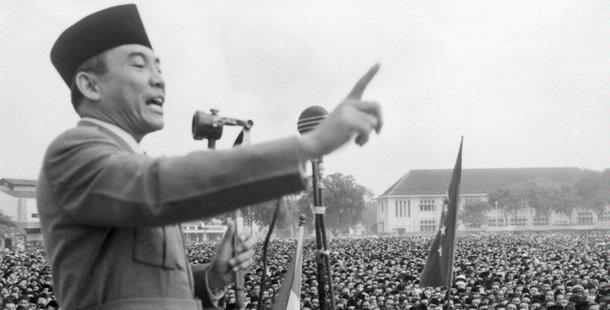
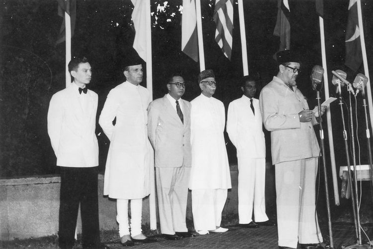
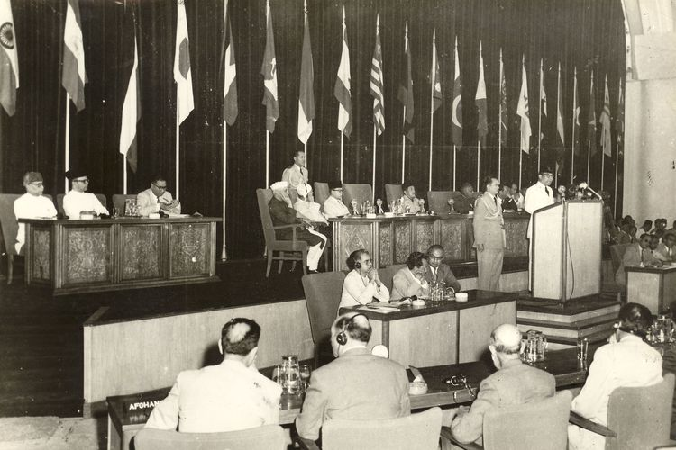
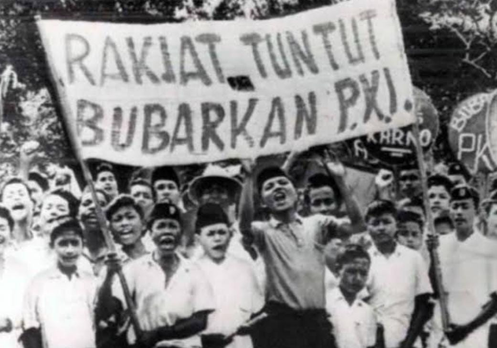
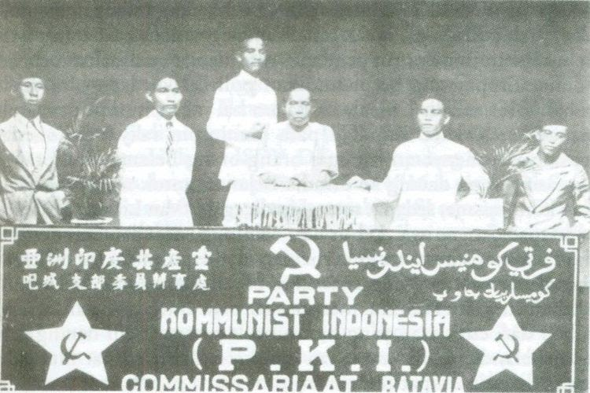

Demokrasi Terpimpin
Demokrasi terpimpin merupakan demokrasi yang ditetapkan oleh Soekarno. Demokrasi ini dipimpin oleh nilai-nilai dan moral bangsa kembali pada 5 nilai yang ada Demokrasi ini merupakan peralihan dari bangsa Indonesia yang terjajah menjadi bangsa yang merdeka (masih membiasakan diri dengan Pancasila). Pada era ini, masih menentang Pancasila karena cenderung sentralistik dan semua mengarah ke presiden. Di era ini, Soekarno ingin menjadi presiden otoriter (berkuasa seumur hidup). Semua keputusan dipilih oleh Soekarno (lama-lama tidak seperti demokrasi lagi karena rakyat tidak bisa berpendapat).

🕮 Sejarah
|

|
🗣 Peristiwa Penting
|



|
Konferensi Asia-AfrikaKonferensi Asia-Afrika dipimpin oleh Presiden Soekarno (18-24 April 1955). Dihadiri oleh beberapa negara Asia dan Afrika yang baru merdeka. Soekarno menyarankan demokrasi terpimpin sebagai pemerintahan yang cocok untuk negara yang baru merdeka. Karena menurutnya, ada kepemimpinan yang lebih besar di tangan presiden. Konferensi ini bersifat non-blok dan menegaskan hak kedaulatan nasional. Negara-negara yang baru merdeka saling bersolidaritas dalam berusaha membangun kekuatan politik mereka masing-masing. Konferensi ini menunjukkan semangat kemerdekaan dan solidaritas di antara negara-negara yang baru merdeka. |
|
G30S PKI
Yaitu pemberontak yang menjadi puncak periode ini (Gerakan 30 September 1965). Peristiwa ini menyebabkan
berakhirnya masa pemerintahan Presiden Soekarno yang digantikan oleh Presiden Soeharto. Pemberontakan ini
terjadi karena seakan-akan dapat "kesempatan" saat Soekarno menggabungkan Nasakom. |


|